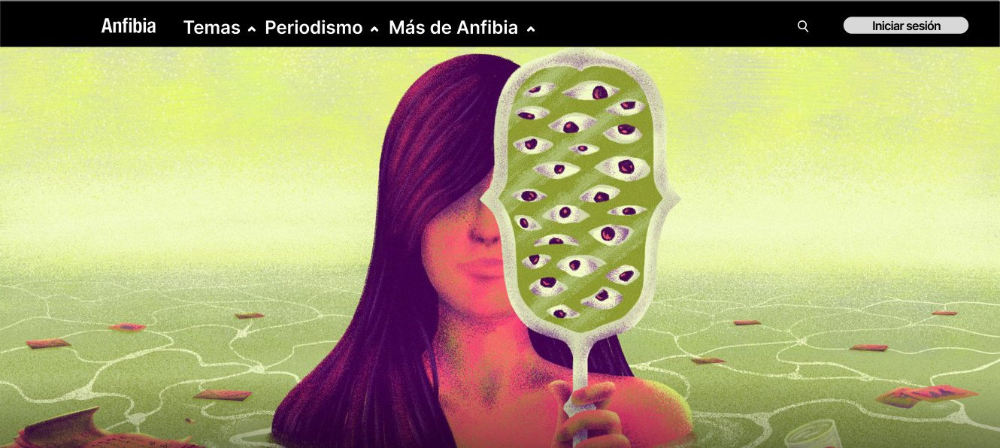
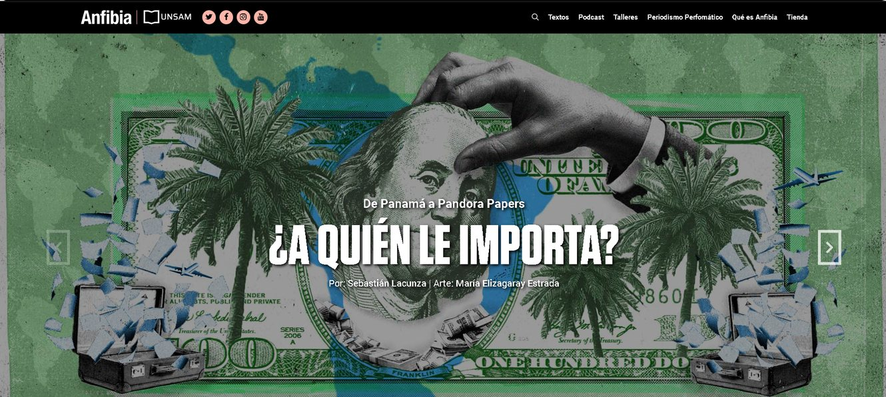
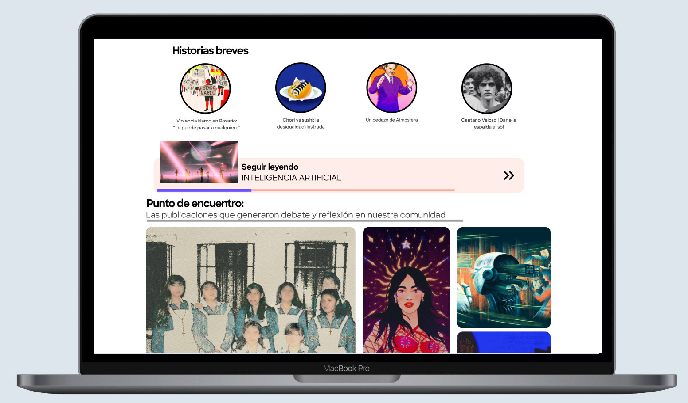
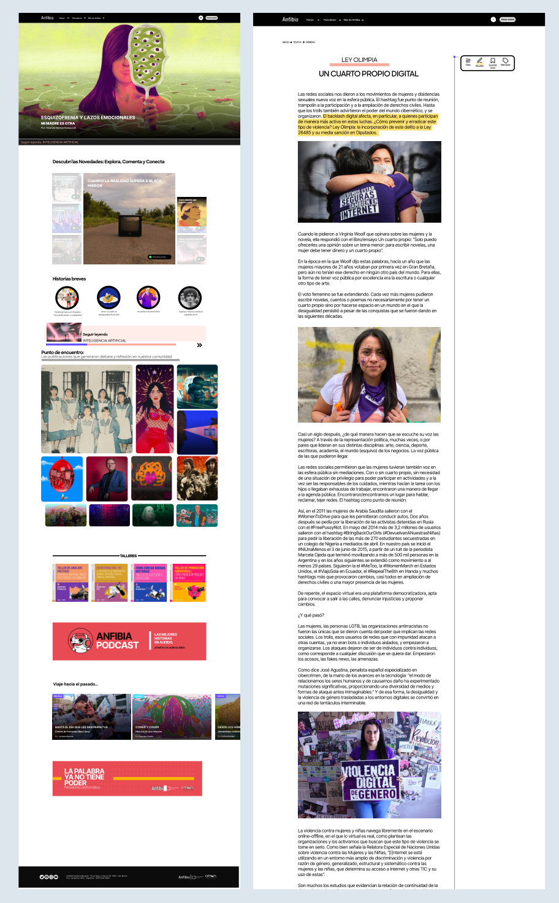

Web redesign · Academic project
Revista Anfibia Redesign
A complete rebuild of the Revista Anfibia website, a digital outlet for narrative journalism, as a course assignment. The challenge: starting from a real product, with its own content, identity and audience.
Project details
- Project
- Revista Anfibia Redesign
- Context
- Multimedia Design Workshop 2 · UNLP · 2021
- Team
- 3 people
Type:AppWebGame
I did:Information architectureUIDevelopment
Before and after
Drag the line: on the left, the original site in 2021; on the right, our redesign.


Decisions
- Navigation: the main menu went from 6 to 3 categories, with secondary sections in a dropdown, so you reach a story in fewer clicks.
- Typography: sans-serif for body text, more readable on small screens. The serif was kept only for story headlines, as a nod to the original editorial identity.
- Identity: we kept the original site's palette, with 2 main colors and 2 accent colors.
My role: the site structure and information architecture. The three of us did the visual design together.


